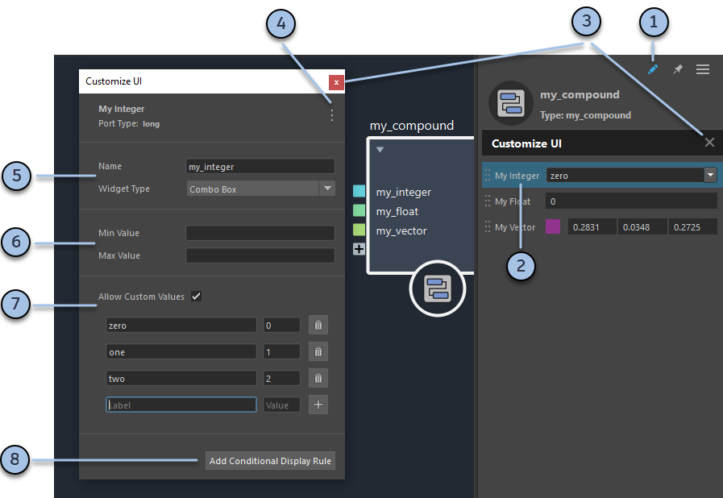
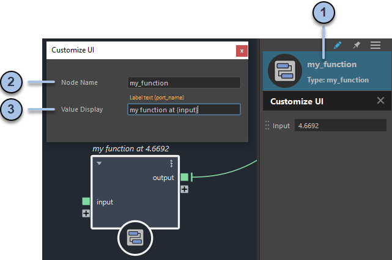
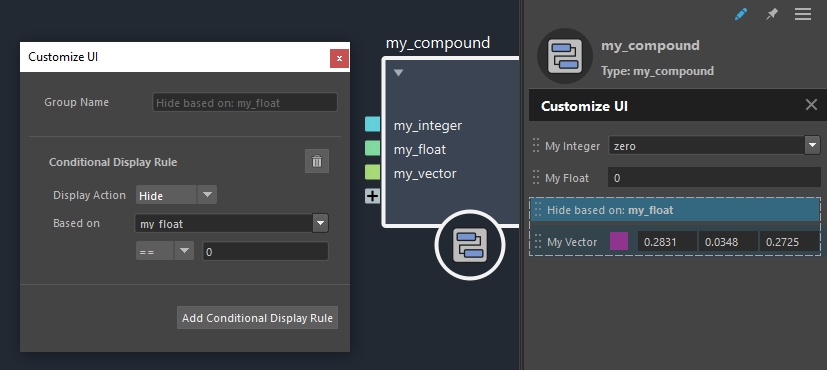

可以自定义复合的输入以提供便利，例如，用于 float3 输入的颜色构件、最小值和最大值、用于命名输入的组合框等。

当自定义数值类型的端口时，可以设置虚拟滑块的最小值和最大值。这些限制会影响虚拟滑块，并且是软限制，这意味着您仍然可以输入范围之外的值（之后滑块在扩展范围内工作）。
对于向量和矩阵，这些限制会影响所有分量。
要移除限制，请删除“最小值”(Min Value)或“最大值”(Max Value)框中的任何值。
当端口的“构件类型”(Widget Type)是“组合框”(Combo Box)时，可以创建可从下拉列表中选择的命名值。
重复上述步骤以添加任意数量的命名值。
添加标签或值后，可以更改该标签或值。要移除命名值，请单击条目旁边垃圾桶的图标。
“允许自定义值”(Allow Custom Values)允许您在“参数编辑器”(Parameter Editor)的输入框中单击以键入除命名值以外的值。禁用此选项后，您只能从下拉列表中选择值，但请注意，仍然可以创建具有不同值的输入连接。
可以使用“自定义 UI”(Customize UI)编辑器为可编辑的复合设置名称和值显示表达式。名称和显示表达式将成为您发布的复合的默认值。
如果节点具有值显示表达式，则默认情况下，它将显示在图表（而不是节点名称）中，显示方式与 value 节点显示实际值的方式相同。这样可以更轻松地读取图表，因为您不需要选择节点即可在“参数编辑器”(Parameter Editor)上查看其值。如果需要，可以选择显示名称而不是值，方法是使用表达式选择一个或多个节点，然后启用“显示 > 显示节点名称”(Display > Show Node Names)。

{my_port}。还可以为任何节点设置值显示表达式，方法是在图表中双击节点名称以对其重命名，然后输入一个字符串，其中包含一个或多个以花括号括起来的端口名称。
通过条件显示规则，您可以在“参数编辑器”(Parameter Editor)中基于其他设置启用、禁用、隐藏或显示参数和组。例如，如果关联的显示选项处于禁用状态，则可以隐藏颜色构件。
请注意，显示规则仅基于即时值。它们不会对图表进行解算以确定条件是否为真，因此如果控制参数具有输入连接，则受影响的参数始终可见且处于启用状态。
若要创建条件显示规则，请执行以下操作：
在“自定义 UI”(Customize UI)编辑器处于打开状态时，在“参数编辑器”(Parameter Editor)中选择要影响的参数或参数组。
在“自定义 UI”(Customize UI)编辑器中，单击“添加条件显示规则”(Add Conditional Display Rule)。这将创建一个基于规则的特殊组（在“参数编辑器”(Parameter Editor)中以虚线轮廓显示），并选择该组以在“自定义 UI”(Customize UI)编辑器中进行编辑。

选择“显示操作”(Display Action)：“显示”(Show)、“隐藏”(Hide)、“启用”(Enable)或“禁用”(Disable)。
在“基于”(Based on)下，选择规则所基于的参数。选择布尔型、整型、浮点型、字符串型或自动参数。
对于非布尔型参数，请从下拉列表中选择一个条件，然后在相应的文本框中输入一个要进行比较的值。
条件 -- 适用于自动端口，而不考虑在它旁边输入的值。
如果需要，可以通过将其他参数和参数组拖动到“参数编辑器”(Parameter Editor)中基于规则的组，来控制这些参数和参数组。若要从基于规则的组中移除某个参数或参数组，只需将它拖到组外即可。
若要嵌套条件显示规则，请在“参数编辑器”(Parameter Editor)中选择基于规则的组，然后单击“添加条件显示规则”(Add Conditional Display Rule)来创建父规则。或者，只需将一个基于规则的组拖动到另一个组内即可。
若要移除某个规则，请在“参数编辑器”(Parameter Editor)中选择相应的组，然后在“自定义 UI”(Customize UI)编辑器中单击垃圾桶图标。